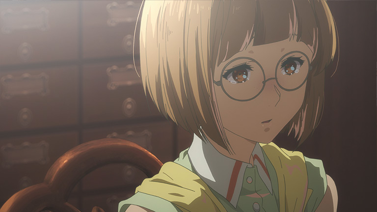
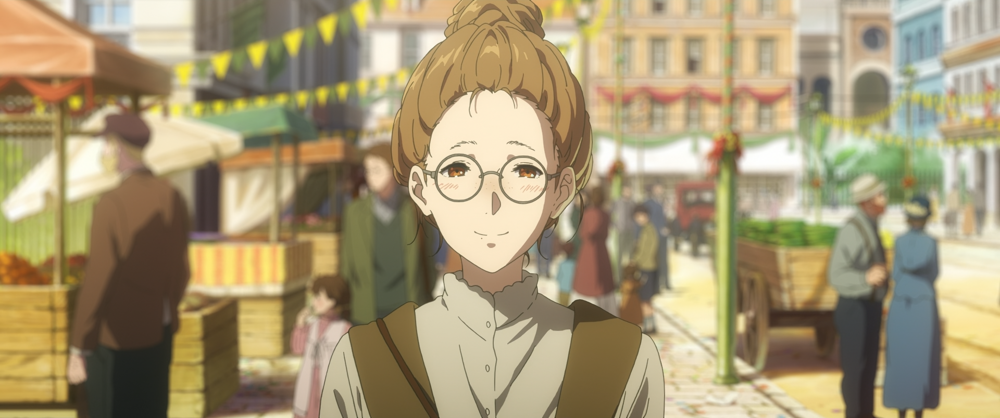
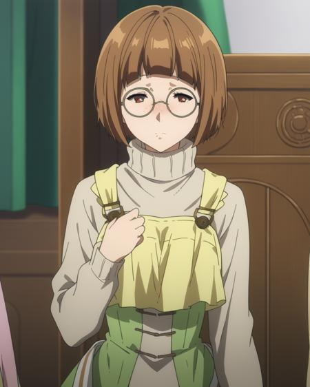
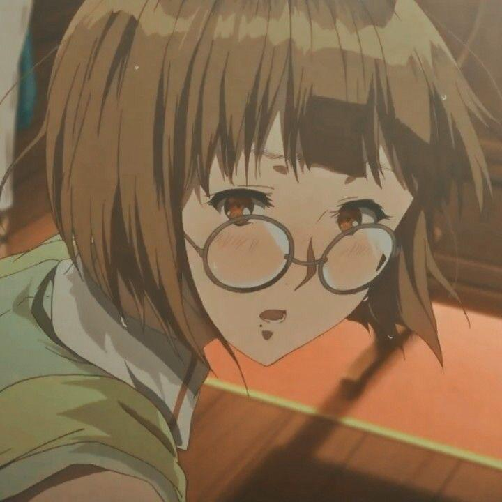
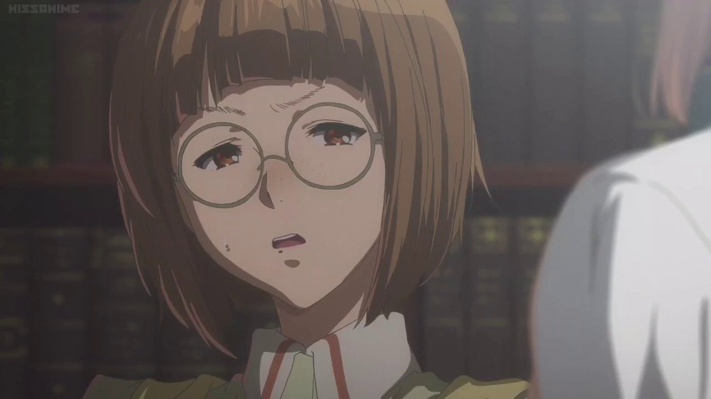
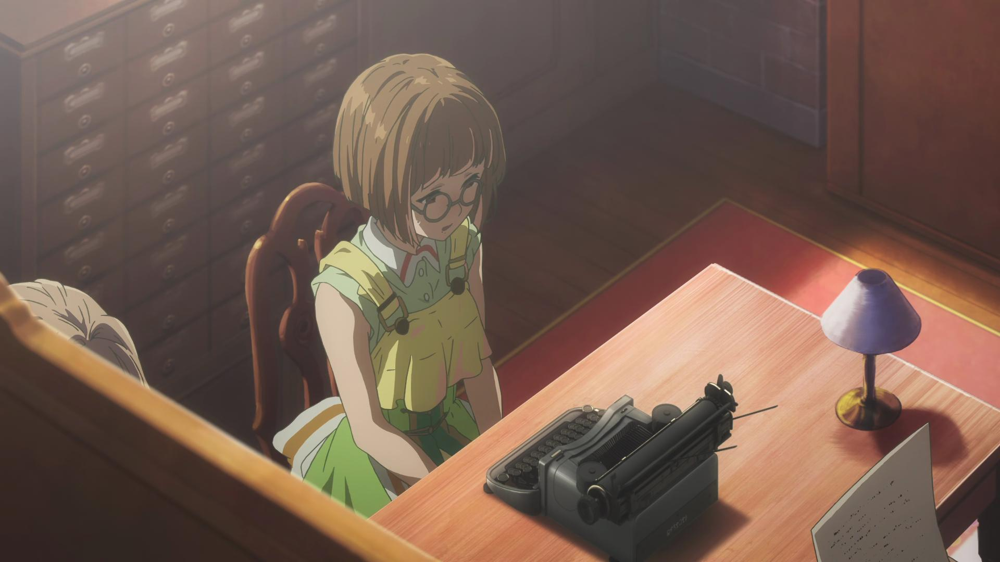

Erica Brown

Erica Brown es una Auto Memory Doll que trabaja en la CH Postal Company. Aunque tímida por naturaleza, es una escritora talentosa con una profunda pasión por las palabras. Su dedicación al oficio proviene de su deseo de ayudar a las personas a expresar sentimientos que no pueden poner en palabras, un objetivo que encuentra profundamente significativo en su labor.
Erica es reservada y a menudo lucha con inseguridades sobre su habilidad para desempeñarse como Doll, especialmente cuando se compara con colegas más experimentados como Cattleya y Violet. Sin embargo, esta timidez contrasta con su compromiso y perseverancia. Erica aspira a convertirse en una escritora reconocida y a superar sus miedos, confiando en que cada carta que escribe la acerca a ese objetivo.
Erica tiene una relación de respeto mutuo con Violet, admirando la habilidad de esta última para conectar con los clientes a pesar de su aparente falta de experiencia emocional. También se siente respaldada por Cattleya y Benedict, quienes la alientan a seguir creciendo en su papel dentro de la empresa. Aunque no siempre lo demuestre, Erica valora profundamente la camaradería de sus compañeros en CH Postal.
Erica representa el crecimiento personal y la superación de las inseguridades. A través de su evolución, muestra que incluso aquellos que dudan de sí mismos tienen el potencial de lograr grandes cosas si se comprometen a mejorar. Su contribución como Auto Memory Doll refleja la importancia de las palabras y su capacidad para conectar corazones, reforzando uno de los temas centrales de Violet Evergarden.
Galleria




